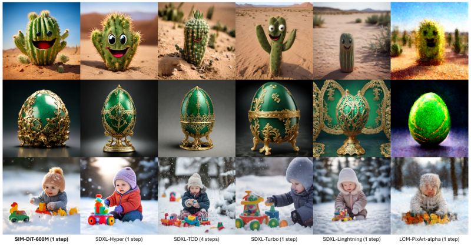
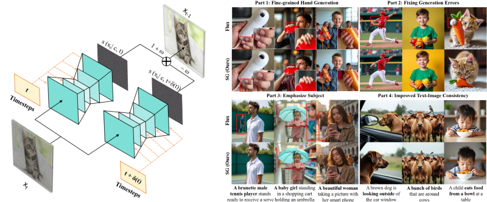
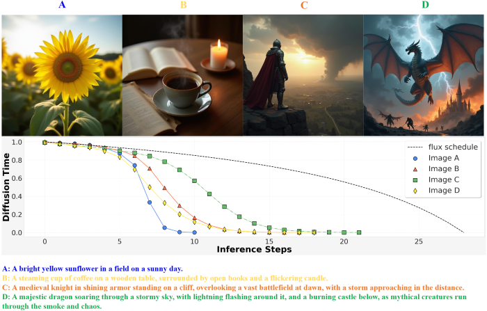

Overview
We aim to advance the theoretical foundations and algorithmic innovations in the field of Artificial Intelligence Generated Content (AIGC). By delving deeply into the theoretical analysis of AIGC algorithms, we seek to uncover the principles underlying generative architectures, optimize training frameworks, accelerate inference, and enhance both controllability and interpretability.
One-Step Diffusion Distillation through Score Implicit Matching
This repository contains inference-only code for our work, SIM, a cutting-edge approach for distilling pre-trained diffusion models into efficient one-step generators. Unlike traditional models that require multiple sampling steps, SIM achieves high-quality sample generation without needing training samples for distillation. It effectively computes gradients for various score-based divergences, resulting in impressive performance metrics: an FID of 2.06 for unconditional generation and 1.96 for class-conditional generation on the CIFAR10 dataset. Additionally, SIM has been applied to a state-of-the-art transformer-based diffusion model for text-to-image generation, achieving an aesthetic score of 6.42 and outperforming existing one-step generators.

Self-Guidance: Boosting Flow and Diffusion Generation on Their Own
Proper guidance strategies are essential to get optimal generation results without re-training diffusion and flow-based text-to-image models. However, existing guidances either require specific training or strong inductive biases of neural network architectures, potentially limiting their applications. To address these issues, in this paper, we introduce Self-Guidance (SG), a strong diffusion guidance that neither needs specific training nor requires certain forms of neural network architectures. Different from previous approaches, the Self-Guidance calculates the guidance vectors by measuring the difference between the velocities of two successive diffusion timesteps. Therefore, SG can be readily applied for both conditional and unconditional models with flexible network architectures. We conduct intensive experiments on both text-to-image generation and text-to-video generations across flexible architectures including UNet-based models and diffusion transformer-based models. On current state-of-the-art diffusion models such as Stable Diffusion 3.5 and FLUX, SG significantly boosts the image generation performance in terms of FID, and Human Preference Scores. Moreover, we find that SG has a surprisingly positive effect on the generation of high-quality human bodies such as hands, faces, and arms, showing strong potential to overcome traditional challenges on human body generations with minimal effort.

Schedule On the Fly: Diffusion Time Prediction forFaster and Better Image Generation
Diffusion and flow models have achieved remarkable successes in various applications such as text-to-image generation. However, these models typically rely on the same predetermined denoising schedules during inference for each prompt, which potentially limits the inference efficiency as well as the flexibility when handling different prompts. In this paper, we argue that the optimal noise schedule should adapt to each inference instance, and introduce the Time Prediction Diffusion Model (TPDM) to accomplish this. TPDM employs a plug-and-play Time Prediction Module (TPM) that predicts the next noise level based on current latent features at each denoising step. We train the TPM using reinforcement learning to maximize the final image quality while discounting the number of denoising steps. With such an adaptive scheduler, TPDM not only generates high-quality images that are aligned closely with human preferences but also adjusts the number of denoising steps and time on the fly, enhancing both performance and efficiency. We train TPDMs on multiple diffusion model benchmarks. With Stable Diffusion 3 Medium architecture, TPDM achieves an aesthetic score of 5.44 and a human preference score (HPS) of 29.59, while using 50% fewer denoising steps to achieve better performance.
